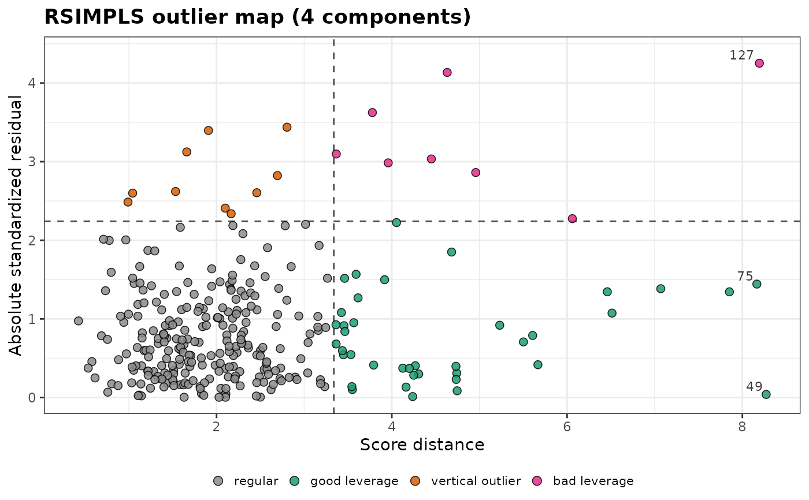
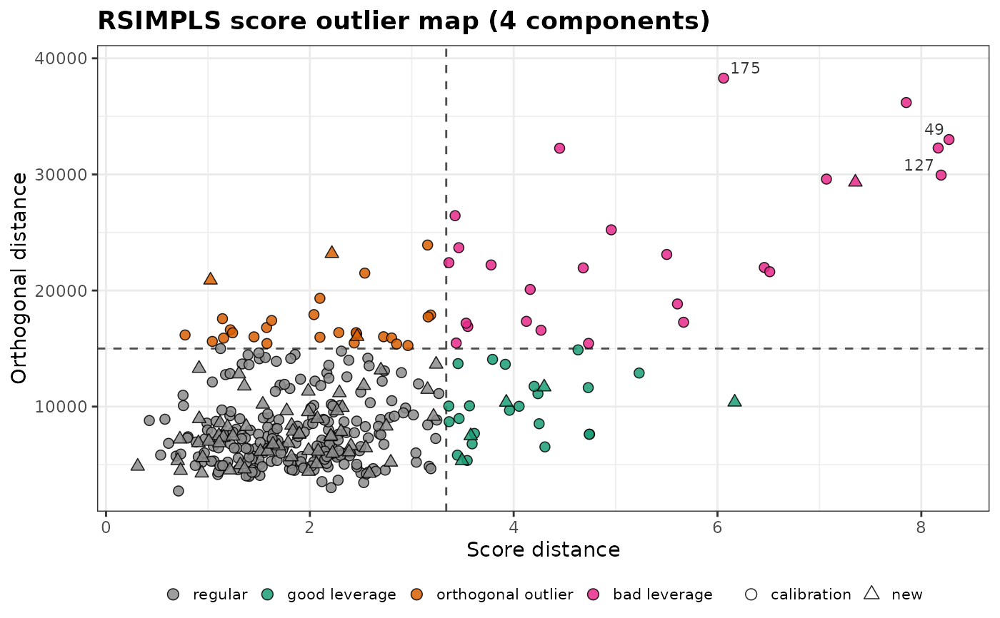

Robust PLS regression by the RSIMPLS algorithm of Hubert and Vanden
Branden (2003): the SIMPLS algorithm (de Jong, 1993) computed from a
robust covariance matrix of the predictors and the responses, followed by
a robust regression of the responses on the scores. Outlying spectra and
wrong reference values have little influence on the model, and the
regression outlier map (plot_outlier_map()) classifies them.
Arguments
- x
A numeric matrix or data frame of the predictors (spectra), one observation per row.
- y
A numeric vector, matrix or data frame of the responses, with one row per observation.
- ncomp
The number of components of the model.
- kmax
The largest number of components considered. ROBPCA is applied with
kmaxplus the number of responses components, so the model also depends onkmax(see Details). Default is 10, as in the paper; it is raised toncompif needed, and lowered when there are too few observations or variables (at most one less than the number of variables).- alpha
The robustness parameter of
robpca(): the fraction of observations assumed to be regular, between 0.5 and 1. Default is 0.75.- ndir
The number of random directions of the outlyingness in
robpca(). Default is 250.- nsamp
The number of random subsets of FAST-MCD in
robpca(). Default is 500.
Value
An object of class specproc_rsimpls, a list with:
coefficients,intercept: the regression coefficients (a \(p \times q\) matrix) and intercepts, in the units of the responses.x_weights,x_loadings,x_scores: the weight vectors \(R\), the loadings \(P\) and the scores \(T\) of thencompcomponents.y_loadings: the slopes \(A\) of the regression of the responses on the scores (ncomprows).center,y_center: the robust centers of the predictors and responses.fitted,residuals: the fitted values and residuals.sigma: the robust covariance matrix of the residuals.sd,rd,od: the score, residual and orthogonal distances of each observation, andcutoff_sd,cutoff_rd,cutoff_odtheir cut-offs.R2: the robust \(R^2\) of the model (see Details).outlier_type: a factor classifying each observation as"regular","good leverage","vertical outlier"or"bad leverage".weights: 1 for the observations of the final regression (residual distance below the cut-off of the initial fit), 0 for the others.robpca_weights: the weights \(w_i\) of the ROBPCA step.components: a tibble with the robustR2andRMSEof the models with 1 tokmaxcomponents.models: thecoefficientsandinterceptof the models with 1 tokmaxcomponents, for predictions with another number of components (predict(fit, newdata, ncomp = )).ncomp,kmax,h,alpha: the settings used, andy_scale, the factor applied to the responses before ROBPCA.
Use predict() for the predictions of new observations.
Details
The algorithm follows the published description in three steps:
Robust covariance.
robpca()is applied to \(Z = (X, Y)\) with \(k_0 = k_{max} + q\) components, where \(q\) is the number of responses. It gives a robust center \(\hat\mu_z\) and a robust covariance matrix \(\hat\Sigma_z = P L P^T\), of rank \(k_0\). The observations that are regular in this fit (both distances below their cut-offs) get the weight \(w_i = 1\), the others \(w_i = 0\).Robust scores. The SIMPLS weight vectors \(r_a\) are computed from the blocks \(\hat\Sigma_{xy}\) and \(\hat\Sigma_x\) of \(\hat\Sigma_z\) instead of the empirical covariance matrices, and the scores are \(t_{ia} = (x_i - \hat\mu_x)^T r_a\).
Robust regression. The responses are regressed on the scores by least squares on the observations with \(w_i = 1\) (the ROBPCA regression of the paper). The observations whose residual distance \(RD_i = \sqrt{r_i^T \hat\Sigma_e^{-1} r_i}\) exceeds \(\sqrt{\chi^2_{q, 0.975}}\) are set aside, and the regression is recomputed by least squares on the others (reweighting).
The regression coefficients are \(B = R_k A_k\), from the weight
vectors \(R_k\) and the slopes \(A_k\) of the regression on the first
ncomp scores.
Diagnostics. The score distance \(SD_i\) is the Mahalanobis distance of the scores, with the center and covariance of the scores of the observations with \(w_i = 1\), and its cut-off is \(\sqrt{\chi^2_{k, 0.975}}\). The residual distance has the cut-off \(\sqrt{\chi^2_{q, 0.975}}\); with one response, it is the absolute standardized residual. Observations beyond the score cut-off only are good leverage points, beyond the residual cut-off only vertical outliers, and beyond both bad leverage points.
The orthogonal distance \(OD_i = \|x_i - \hat\mu_x - P t_i\|\) is the
norm of the residual of the spectrum, the part that the ncomp
components do not describe, and its cut-off is that of robpca().
Observations beyond it are orthogonal outliers in the predictor space,
which the regression outlier map does not show; the score outlier map
(plot_outlier_map(fit, map = "score")) does. The robust \(R^2\) of
the model (R2) is computed on the observations whose orthogonal and
residual distances are both below their cut-offs; with several
responses, it is one minus the ratio of the determinants of the residual
and total sums of squares and cross-products.
Number of components. components gives, for 1 to kmax
components, the robust \(R^2\) of the paper (Remark 7) and the root
mean squared error, on the observations that are regular in every one of
these models. They describe the fit to the calibration data; for
predictions, choose ncomp by cross-validation, for example with the
"rsimpls" engine of parsnip::pls() in tidymodels (pls_rsimpls).
These models all come from the same ROBPCA fit, with
\(k_0 = k_{max} + q\) components, so the model with ncomp components
also depends on kmax. With kmax = ncomp, ROBPCA is applied with
ncomp plus \(q\) components, and components stops at ncomp.
Differences from the paper.
ROBPCA is not scale equivariant, so the scale of the responses relative to the spectra matters. Spectral intensities are usually much larger than concentrations, and a response on its own scale would play almost no part in the ROBPCA fit, which would then miss wrong reference values. The responses are therefore scaled before ROBPCA so that their total robust variance (the sum of the squared MADs, or standard deviations for variables with a zero MAD) equals that of the predictors (block scaling). The results are returned in the units of the responses.
The cut-off of the orthogonal distances, in the ROBPCA step and of the model, is that of
robpca()(the Wilson-Hilferty approximation of Hubert, Rousseeuw and Vanden Branden, 2005), which the paper mentions as an alternative.The residual covariance of the reweighted regression is multiplied by the consistency factor of the reweighted MCD, \(0.975 / P(\chi^2_{q+2} \le \chi^2_{q, 0.975})\), as the observations beyond the cut-off are left out.
This is an independent implementation of the published description.
robpca() uses random directions and random subsets, so use
set.seed() for reproducible results.
References
Hubert, M., Vanden Branden, K. (2003). Robust methods for partial least squares regression. Journal of Chemometrics, 17(10):537-549.
de Jong, S. (1993). SIMPLS: an alternative approach to partial least squares regression. Chemometrics and Intelligent Laboratory Systems, 18(3):251-263.
Hubert, M., Rousseeuw, P.J., Vanden Branden, K. (2005). ROBPCA: a new approach to robust principal component analysis. Technometrics, 47(1):64-79.
Examples
data(forageLIBS)
wl <- suppressWarnings(as.numeric(names(forageLIBS)))
spectra <- forageLIBS[which(wl > 380 & wl < 430)] # Ca II and Ca I lines
cal <- 1:300
set.seed(1)
fit <- rsimpls(spectra[cal, ], forageLIBS$Ca[cal], ncomp = 4)
fit
#> Robust PLS regression (RSIMPLS)
#>
#> Observations: 300 (h = 225)
#> Variables: 594
#> Responses: 1
#> Components: 4 (robust R2 of 1 to 10 components: 0.211 0.491 0.689 0.761 0.762 0.768 0.767 0.767 0.767 0.775)
#> Robust R2: 0.738
#> Residual scale: 0.09176
#>
#> Outlier types:
#>
#> regular good leverage vertical outlier bad leverage
#> 243 39 10 8
#>
#> Orthogonal outliers: 50
head(predict(fit, spectra[-cal, ]))
#> [1] 0.4159052 0.5470408 0.7232786 0.6207605 0.8097063 0.1862145
plot_outlier_map(fit)

plot_outlier_map(fit, map = "score", newdata = spectra[-cal, ])
